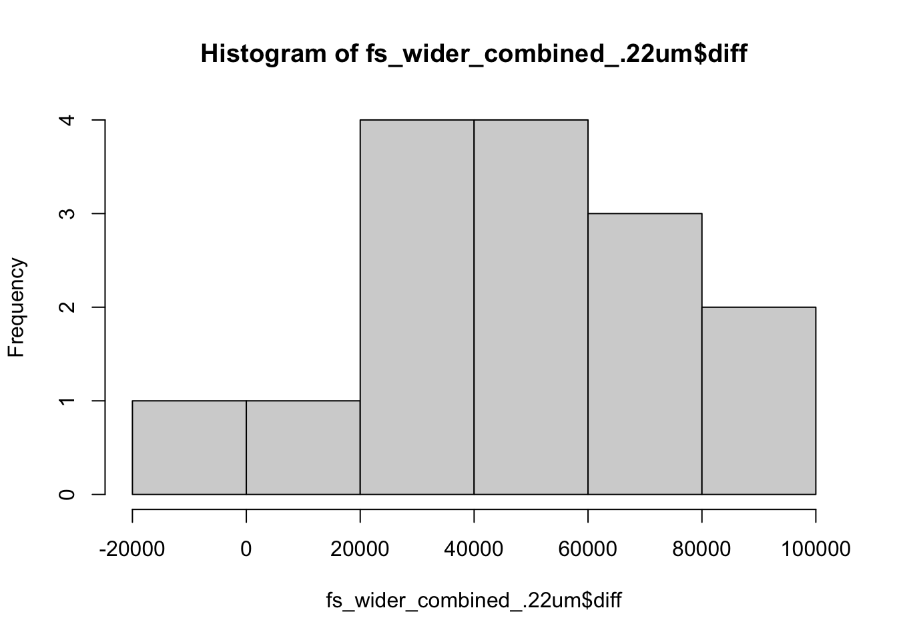
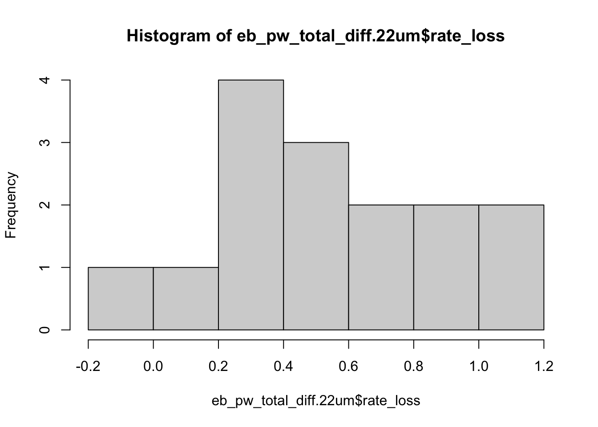
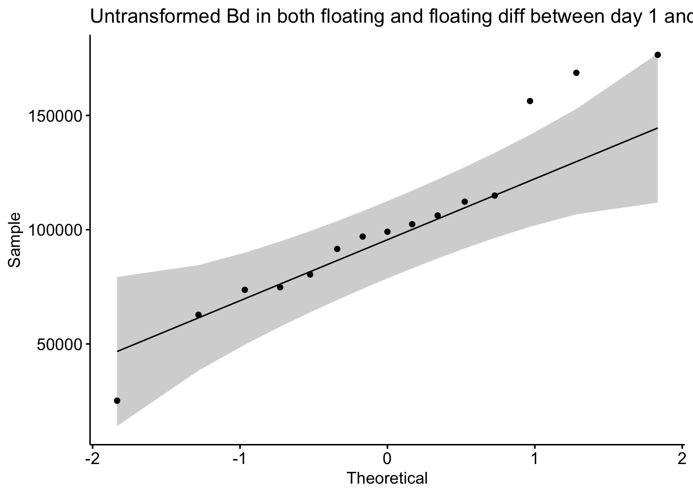
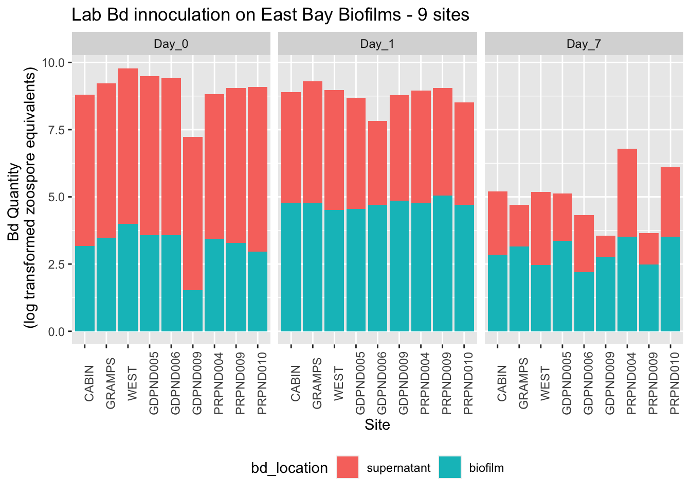

NOTE: we need to discuss how we are handling adherent vs floating, I did one test combining and a test on each
Part I Q1
Is there a difference in the gain or loss of Bd over 7 days between the filter sizes looking at the TOTAL BD
Answer: There is a significant difference in the change in the total quantity of Bd from Day 1 to Day 7 across the filter types (t = 4.7879, df = 14, p-value = 0.000289)
Part I Q2
Is there a difference in the gain or loss of Bd over 7 days between the filter sizes looking at the ADHERENT BD
Answer: There is a significant difference in the change in the adherent Bd from Day 1 to Day 7 across the filter types (t = -5.8588, df = 14, p-value = 4.155e-05)
Part I Q3
Is there a difference in the gain or loss of Bd over 7 days between the filter sizes looking at the FLOATING BD
Answer: Data are not normal enough to test this question for the floating Bd according to qqPlot and shapiro
This experiment took pond water from 15 East Bay sites in Spring 2022 back to the lab, filtered the pond water to keep or remove the microbes, and added the pond water to lab-cultured Bd-monoculture-biofilms. Two biofilms per water treatment, one destructively sampled day 1, and one destructively sampled day 7 for qPCR quantification of Bd in the supernatant and the biofilm itself.
PI Data visualization
Renwei barplot
Discussion points: Color preferences? And consider if we arent distinguishing bw floating and adherent, can make a simpler plot with just the total Bd, filter, and day, and can do a side by side boxplot with day to clearly show the difference and only one facet. Also labels: do we want it to be “with microbes” and “without microbes”?
ggtitle("Effect of aquatic environmental microbes on Bd growth")
$title
[1] "Effect of aquatic environmental microbes on Bd growth"
attr(,"class")
[1] "labels"
PI Stats and assumption testing
Question:
Does the difference in Bd from day 1 to day 7 differ between the two filter types?
The samples are essentially paired by site, so a paired t-test is most appropriate
\(H0:μ_{difference in Bd}=0\)
Assumptions:
Assumes that the observations from each group represent a random sample from the population. Assumes that the difference of the two observations follow a normal distribution.
Plan: 3 paired t-tests: Simplest: combining floating and not floating Bd, then more complex: One for adherent, one for floating, then let Cherie and Renwei choose which is most appropriate
Part I Q1: Paired t-test on the difference in all of the Bd from day 1 to day 7 between the two filters
There is a significant difference in the change in the total quantity of Bd from Day 1 to Day 7 across the filter types (t = 4.7879, df = 14, p-value = 0.000289)
Code
# Assumptions testing# Step 1: combine floating and floatingfs_wider_combined <- fs_pw_bd %>%pivot_wider(names_from = bd_location, values_from = bd_qty) %>%mutate(combined_bd = adherent + floating)fs_wider_combined <-subset(fs_wider_combined, select =-c(adherent,floating) )fs_wider_combined <- fs_wider_combined %>%# calculate diffpivot_wider(names_from = day, values_from = combined_bd) %>%mutate(diff = Day_1 - Day_7)# Step 2: create subsets for each treatmentfs_wider_combined_40um <- fs_wider_combined %>%filter(filter =="40um_filter")fs_wider_combined_.22um <- fs_wider_combined %>%filter(filter =="0.22um_filter")# Step 3: check normality of the differences across groupsfs_wider_combined_40um %>%ggqqplot("diff", title ="Untransformed Bd in both floating and floating diff between day 1 and 7 qqPlot") # good enough
Shapiro-Wilk normality test
data: fs_wider_combined_.22um$diff
W = 0.96225, p-value = 0.7314
Code
hist(fs_wider_combined_.22um$diff) # good enough

Stats:
Code
# Step 3: run the paired t-test on the differencet.test(fs_wider_combined_40um$diff, fs_wider_combined_.22um$diff, paired =TRUE)
Paired t-test
data: fs_wider_combined_40um$diff and fs_wider_combined_.22um$diff
t = 4.7879, df = 14, p-value = 0.000289
alternative hypothesis: true mean difference is not equal to 0
95 percent confidence interval:
30282.21 79427.13
sample estimates:
mean difference
54854.67
Part I Q2: Paired t-test on the difference in floating Bd from day 1 to day 7 between the two filters
There is a significant difference in the change in the adherent Bd from Day 1 to Day 7 across the filter types (t = -5.8588, df = 14, p-value = 4.155e-05)
Code
# Step 1: SELECT ONLY adherent BD and calculate the diff between day 1 and 7fs_adherent_wide <- fs_pw_bd %>%filter(bd_location =="adherent") %>%# calculate diffpivot_wider(names_from = day, values_from = bd_qty) %>%mutate(diff = Day_1 - Day_7)# Step 2: create subsets for each treatmentfs_adherent_wide_40 <- fs_adherent_wide %>%filter(filter =="40um_filter")fs_adherent_wide_.22<- fs_adherent_wide %>%filter(filter =="0.22um_filter")# Step 3: check normality of the differences across groupsfs_adherent_wide_40 %>%ggqqplot("diff", title ="Untransformed Bd in both adherent and adherent diff between day 1 and 7 qqPlot") # perf
Shapiro-Wilk normality test
data: fs_adherent_wide_.22$diff
W = 0.97735, p-value = 0.9481
Code
hist(fs_adherent_wide_.22$diff) # good enough

Stats:
Code
# Step 3: run the paired t-test on the differencet.test(fs_adherent_wide_.22$diff, fs_adherent_wide_40$diff, paired =TRUE)
Paired t-test
data: fs_adherent_wide_.22$diff and fs_adherent_wide_40$diff
t = -5.8588, df = 14, p-value = 4.155e-05
alternative hypothesis: true mean difference is not equal to 0
95 percent confidence interval:
-75910.98 -35225.82
sample estimates:
mean difference
-55568.4
Part I Q3: Paired t-test on the difference in FLOATING Bd from day 1 to day 7 between the two filters
Floating Bd alone is not normally distrubuted, violates the test assumptions
If this is an important question, need to determine transformation (log of the neg difference (aka gain in floating Bd is throwing NaN’s)
Code
par(mfrow =c(2, 2))# Step 1: SELECT ONLY floating BD and calculate the diff between day 1 and 7fs_floating_wide <- fs_pw_bd %>%filter(bd_location =="floating") %>%# calculate diffpivot_wider(names_from = day, values_from = bd_qty) %>%mutate(diff = Day_1 - Day_7)# Step 2: create subsets for each treatmentfs_floating_wide_40 <- fs_floating_wide %>%filter(filter =="40um_filter")fs_floating_wide_.22<- fs_floating_wide %>%filter(filter =="0.22um_filter")# Step 3: check normality of the differences across groupsqq1 <-qqPlot(fs_floating_wide_40$diff) # NOPEshapiro.test(fs_floating_wide_40$diff) # NOPE
Shapiro-Wilk normality test
data: fs_floating_wide_40$diff
W = 0.69966, p-value = 0.0002465
Code
hist40 <-hist(fs_floating_wide_40$diff) # NOPE ## could log transform and try again if it is of interestqq2 <-qqPlot(fs_floating_wide_.22$diff)shapiro.test(fs_floating_wide_.22$diff) # normal, yay!
Shapiro-Wilk normality test
data: fs_floating_wide_.22$diff
W = 0.9559, p-value = 0.6216
Code
hist20 <-hist(fs_floating_wide_.22$diff) # good enough

Code
# Step 3: run the paired t-test on the difference#t.test(fs_floating_wide_.22$diff, fs_floating_wide_40$diff, paired = TRUE)
Part II: Effect of the aquatic environmental biofilm on Bd growth - “9 sites”
Part II Q1: Is there a difference in Bd quantity total between day 0, 1, 7? - repeated measures anova
There is a significant difference in the amount of log Bd total across the days (p = 1.01e-11). Day 0 and Day 1 differ (p = 2.48e-05), Day 1 and Day 7 differ (p = 1.35e-05), Day 0 and Day 7 differ (p = 5.82e-07)
Part II Q2: Is there a difference in Bd quantity in the biofilm between day 0, 1, 7? - repeated measures anova
STOP: DOES NOT PASS NORMALITY ASSUMPTION FOR DAY 0!!! Discuss alternative tests?
Part II Q3: Is there a difference in Bd quantity in the supernatant between day 0, 1, 7? - repeated measures anova
There is a significant difference in the amount of log Bd in the supernatant across the days (p = 5.15e-10). Day 0 and Day 1 differ (p = 2.06e-05), Day 1 and Day 7 differ (p = 3.75e-04 ), and Day 0 and Day 7 differ (p = 3.36e-06 )
PII Data visualization
Renwei barplot
Code
ns_biofilm_bd %>%ggplot(aes(y=log10(bd_qty), x = site, fill=bd_location)) +geom_col() +facet_grid(.~day)+theme(axis.text.x =element_text(angle =90),legend.position ="bottom") +xlab("Site") +ylab("Bd Quantity \n (log transformed zoospore equivalents)") +ggtitle("Lab Bd innoculation on East Bay Biofilms - 9 sites")

PII Assumptions testing and Stats
Repeated Measures ANOVA
Unfamiliar test and function to me, followed this tutorial: https://www.datanovia.com/en/lessons/repeated-measures-anova-in-r/
Q1: In total Bd, is there a diff across days 0, 1, 7?
There is a significant difference in the amount of log Bd total across the days (p = 1.01e-11). Day 0 and Day 1 differ (p = 2.48e-05), Day 1 and Day 7 differ (p = 1.35e-05), Day 0 and Day 7 differ (p = 5.82e-07)
Code
# Step 1: combine floating and floatingcombined <- ns_biofilm_bd %>%pivot_wider(names_from = bd_location, values_from = bd_qty) %>%mutate(combined_bd = biofilm + supernatant) %>%mutate(log_combined_bd =log(combined_bd))# assumptionscombined %>%group_by(day) %>%#shapiro_test(combined_bd) %>% # SO DAMN CLOSE without transformationshapiro_test(log_combined_bd) # def normal
# A tibble: 3 × 4
day variable statistic p
<fct> <chr> <dbl> <dbl>
1 Day_0 log_combined_bd 0.957 0.767
2 Day_1 log_combined_bd 0.959 0.790
3 Day_7 log_combined_bd 0.953 0.719
Code
# anovares.aov <-anova_test(data = combined, dv = log_combined_bd, wid = site, within = day)get_anova_table(res.aov) # ges is the generalized effect size (amount of variability due to the within-subjects factor)
ANOVA Table (type III tests)
Effect DFn DFd F p p<.05 ges
1 day 2 16 181.388 1.01e-11 * 0.945
Code
# post hoc pairwise comparison: pairwise ttest with bonferroni correctionpwc <-combined %>%pairwise_t_test( log_combined_bd ~ day, paired =TRUE,p.adjust.method ="bonferroni" )pwc
Q2: In biofilms, is there a diff across days 0, 1, 7?
STOP: DOES NOT PASS NORMALITY ASSUMPTION FOR DAY 0!!!
Code
biofilm_only <- ns_biofilm_bd %>%filter(bd_location =="biofilm") %>%mutate(log_qty =log(bd_qty))# assumptions testsbiofilm_only %>%group_by(day) %>%shapiro_test(log_qty) # day 0 does not pass
# A tibble: 3 × 4
day variable statistic p
<fct> <chr> <dbl> <dbl>
1 Day_0 log_qty 0.780 0.0119
2 Day_1 log_qty 0.938 0.561
3 Day_7 log_qty 0.922 0.412
Code
# anovares.aov <-anova_test(data = biofilm_only, dv = log_qty, wid = site, within = day)get_anova_table(res.aov) # ges is the generalized effect size (amount of variability due to the within-subjects factor)
ANOVA Table (type III tests)
Effect DFn DFd F p p<.05 ges
1 day 2 16 30.6 3.4e-06 * 0.739
Code
# post hoc pairwise comparison: pairwise ttest with bonferroni correctionpwc <- ns_biofilm_bd %>%filter(bd_location =="biofilm") %>%mutate(log_qty =log(bd_qty +1)) %>%pairwise_t_test( log_qty ~ day, paired =TRUE,p.adjust.method ="bonferroni" )pwc
Q3: In supernatant, is there a diff across days 0, 1, 7?
There is a significant difference in the amount of log Bd in the supernatant across the days (p = 5.15e-10). Day 0 and Day 1 differ (p = 2.06e-05), Day 1 and Day 7 differ (p = 3.75e-04 ), and Day 0 and Day 7 differ (p = 3.36e-06 )
# A tibble: 3 × 4
day variable statistic p
<fct> <chr> <dbl> <dbl>
1 Day_0 log_qty 0.955 0.740
2 Day_1 log_qty 0.891 0.204
3 Day_7 log_qty 0.987 0.990
Code
# anovares.aov <-anova_test(data = s_only, dv = log_qty, wid = site, within = day)get_anova_table(res.aov) # ges is the generalized effect size (amount of variability due to the within-subjects factor)
ANOVA Table (type III tests)
Effect DFn DFd F p p<.05 ges
1 day 2 16 107.912 5.15e-10 * 0.903
Code
# post hoc pairwise comparison: pairwise ttest with bonferroni correctionpwc <-s_only %>%pairwise_t_test( log_qty ~ day, paired =TRUE,p.adjust.method ="bonferroni" )pwc
Discuss with group: normality assumption, how would we want to structure a glm type model to properly account for site while accounting for the “paired” apsect of the experiment?